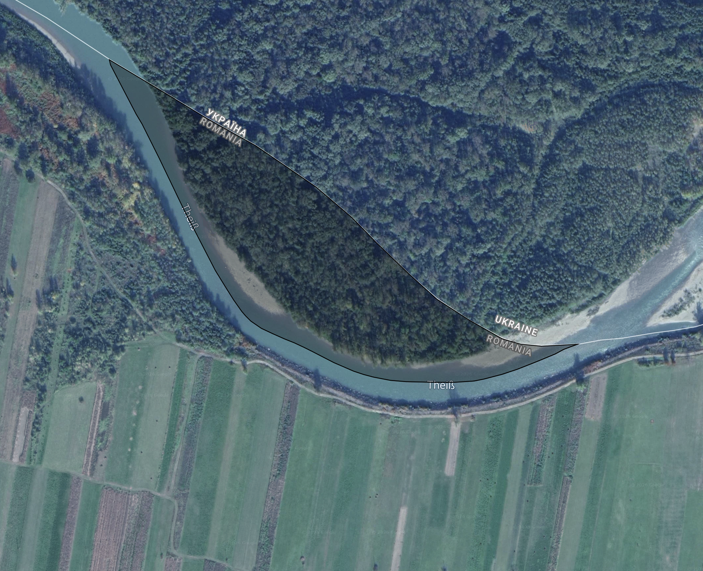

de appe'qwashir/The land of Qwașir
qwashir/Qwașir sits in the northern side of Pommerski and has an Area of 6.84 ha (hectares),
the native language is "rui'exima"
or "Eximanian" in english.
Map / geography
Most Extreme Points
| Direction | Location |
|---|---|
| North | qwashir/Qwașir |
| East | Nival |
| South | Svengrad |
| West | Svengrad |

Language
| English | Qwașir native language (rui'exima) |
|---|---|
| Eximanian | rui'exima |
| Qwașir | qwashir |
| The land of | de appe' (the apostroph stands for "of" in this word, but is normaly used for combining words) |